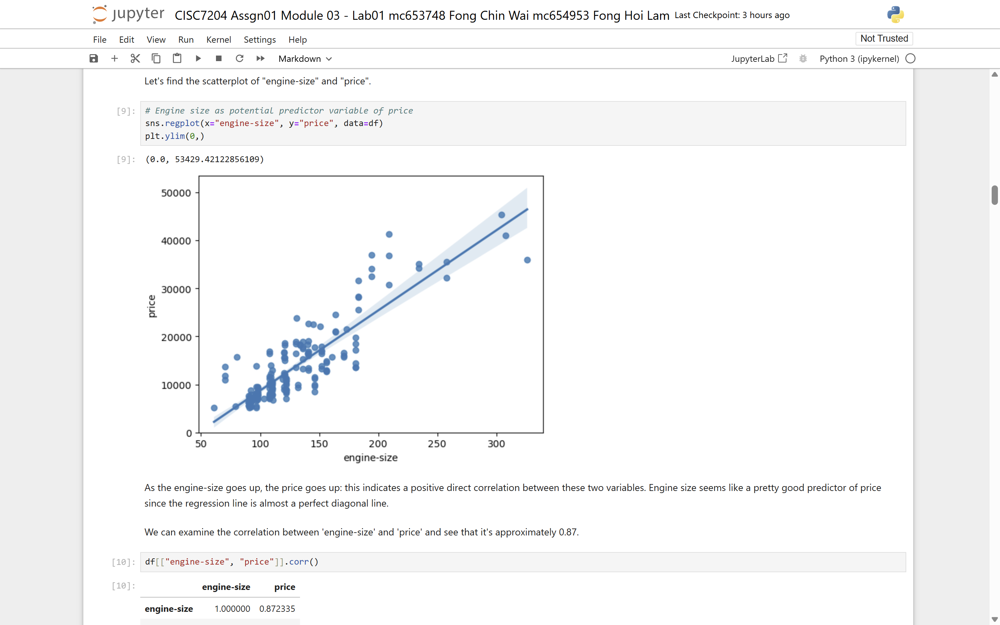
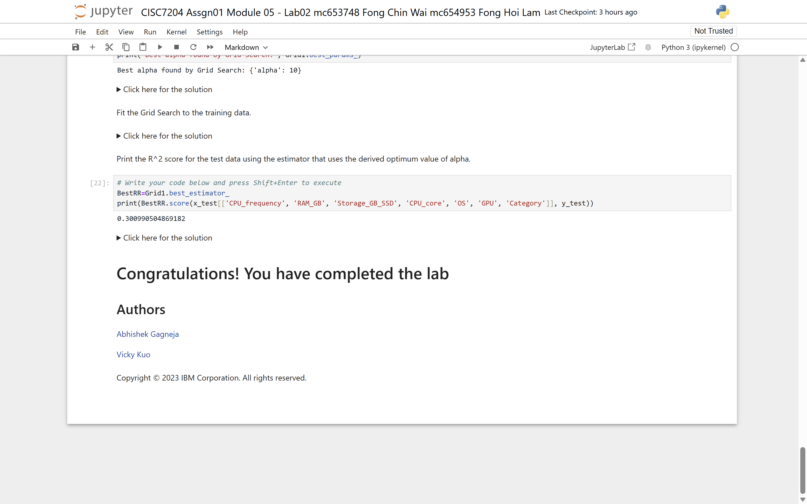

CISC7204 Assignment 1 · Modules 01–06
Predicting Prices with Regression
Can the market price of a product or a property be predicted from its features? This project builds a reproducible regression pipeline for used cars, laptops and houses: acquire the data, clean it with logged decisions, explore the relationships, fit the models, then validate them honestly with cross-validation and regularisation.
Data Science Project · University of Macau

Research question
What drives price, and how well can regression capture it?
The project asks one question across three markets: how accurately can a model predict the price of a used car, a laptop, and a house from its measurable features — and which features matter most?
- Scope
- Six modules of CISC7204 Assignment 1: acquisition (M01), wrangling (M02), EDA (M03), linear regression (M04), cross-validation and Ridge regularisation (M05), and a final house-price project (M06).
- Datasets
- 1985 automobile data from UCI, laptop data from IBM Skills Network, used cars from Kaggle, and a 21,613-row King County house-price dataset from Kaggle.
- Deliverable
- Six module notebooks, the processed datasets, all figures, and a README that reproduces the analysis end to end.
Why this question: price prediction is the classic first regression problem — the data is tabular, the target is continuous, and the difference between a good and a careless answer is visible in a single R² number.
Dataset sources
Six files, three markets, one workflow.
Raw sources are external and credited; derived files are produced by the pipeline itself and kept alongside the notebooks that consume them.
| File | Description | Source |
|---|---|---|
| auto.csv | 1985 automobile price data — 26 attributes including engine size, horsepower, curb weight and price. | UCI Machine Learning Repository (Automobile Data Set) |
| laptops.csv | Laptop specifications and prices used for the Module 04 linear regression exercise. | IBM Skills Network (laptop pricing dataset, DA0101EN) |
| usedcars.csv | Used-car listings for the multiple regression exercise. | IBM Skills Network (used cars dataset, DA0101EN) |
| clean_df.csv | Cleaned version of the automobile data produced in Module 02 — question marks converted to NaN, missing values handled, dtypes corrected. | Derived · produced by the pipeline |
| module_5_auto.csv | Feature-engineered automobile data prepared for cross-validation and Ridge regression in Module 05. | Derived · produced by the pipeline |
| housing.csv | 21,613 rows of King County house sales used for the Module 06 final project on house-price prediction. | Kaggle (King County house sales) |
Methods & tools
An honest pipeline, not a model zoo.
pandas and NumPy for data; Matplotlib and seaborn for EDA; scikit-learn for every model and every validation step. The pipeline is deliberately simple at each stage so that a decision can always be traced.
- Data acquisition
- Read the raw files as they are, restore meaning (headers, units, placeholders) and record the source of each file.
- Wrangling
- Convert placeholders such as
?to NaN, impute numeric columns with the mean where recoverable, fix data types, and bin horsepower into interpretable bands — each change logged in the notebook. - EDA
- Correlation matrices and scatter plots rank the predictors, starting with engine size and price; histograms and binning charts show how the distributions actually look.
- Modelling
- Simple linear, multiple linear and polynomial regression on train/test splits, then
cross_val_scorefor stability andRidgewithGridSearchCVto tune the penalty alpha. - Evaluation
- R² and MSE reported on held-out test data — never on the training set — so the comparison between models is honest.
Key findings & limitation
What the numbers say, and where they stop.
Three conclusions survived validation; one honest caveat keeps them honest.
- Finding 1 — engine size and horsepower dominate car price
engine-sizecorrelates with price at r = 0.872, with horsepower close behind. Together they explain most of the variance that a simple linear model can capture.- Finding 2 — square footage dominates house price
- Applied to the 21,613-row King County housing data, the same workflow shows living-area footage as the decisive predictor, with location and condition adding a smaller but real contribution.
- Finding 3 — Ridge + GridSearchCV beats the naive flexible model
- Plain polynomial regression overfits; Ridge regression with a grid-searched alpha lifts the test-set R² and stabilises MSE across cross-validation folds.
Limitation: the automobile dataset is from 1985. Its relationships were stable enough to teach regression, but the absolute price levels and feature effects do not transfer to today's market — treat it as a modelling exercise, not a pricing oracle.


How to reproduce
From zero to the same R² in four steps.
Python 3 is assumed. The notebooks read their CSV files with relative paths, so clone the repository and run the notebooks from its root.
-
Clone the repository
git clone https://github.com/FongChinWai-Vivi/data-science-project.git cd data-science-project -
Create a virtual environment
python -m venv .venv .venv\Scripts\activate # Windows source .venv/bin/activate # macOS / Linux -
Install the pinned dependencies
pip install -r requirements.txt -
Run the notebooks in order
jupyter notebook notebooks/Execute A1_Module01 through A1_Module06 in sequence. Each notebook regenerates its figures into the
figures/folder as it runs.
Notebooks (download)
Repository structure
Everything in its place.
Notebooks, data, figures and docs live in flat, predictable folders so that relative paths survive a fresh clone.
data-science-project/
├── README.md
├── requirements.txt
├── data/
│ ├── auto.csv
│ ├── clean_df.csv
│ ├── housing.csv
│ ├── laptops.csv
│ ├── module_5_auto.csv
│ └── usedcars.csv
├── figures/
│ ├── m02_horsepower_binning_histogram.png
│ ├── m02_missing_values_filled_with_mean.png
│ ├── m03_scatter_engine_size_vs_price.png
│ ├── m04_model_comparison_r2_mse.png
│ ├── m05_gridsearch_alpha_tuning.png
│ └── m06_price_vs_sqft_correlations.png
└── notebooks/
├── A1_Module01_Lab01_DataAcquisition.ipynb
├── A1_Module02_Lab01_Wrangling.ipynb
├── A1_Module03_Lab01_EDA.ipynb
├── A1_Module04_Lab01_LinearRegression.ipynb
├── A1_Module05_Lab01_CrossValidation_Ridge.ipynb
└── A1_Module06_FinalProj_HousePrice.ipynb